How the CLAS Web Services Group at the University of Iowa developed a digital signage solution using Drupal.
Created by the CLAS Web Services Group
Press the SPACEBAR to advance through the slides...
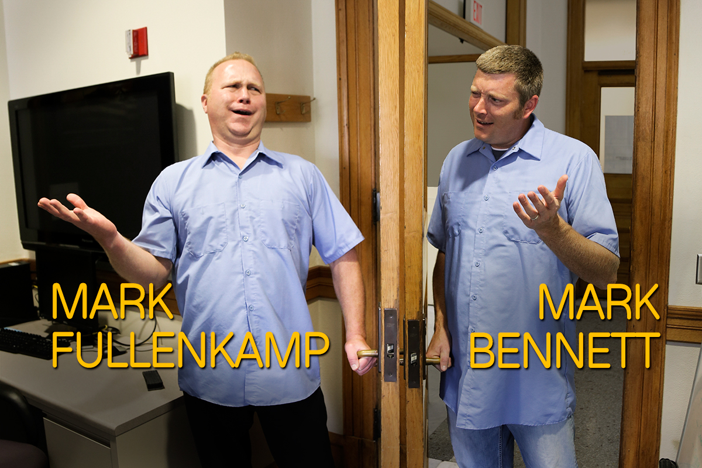
Save time and money vs. printed signage
Dynamic vs. static content
Timely (even immediate) updates to content
Centralized control to manage multiple locations
Modern look (graphics and animations)
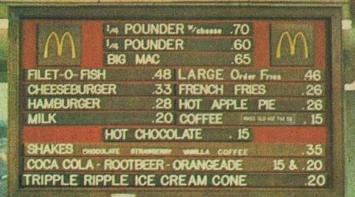
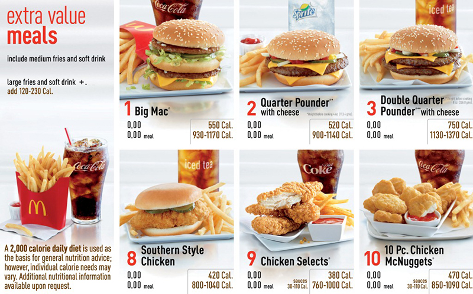
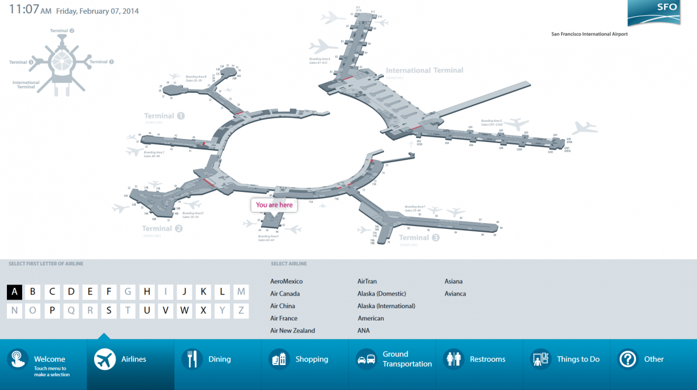
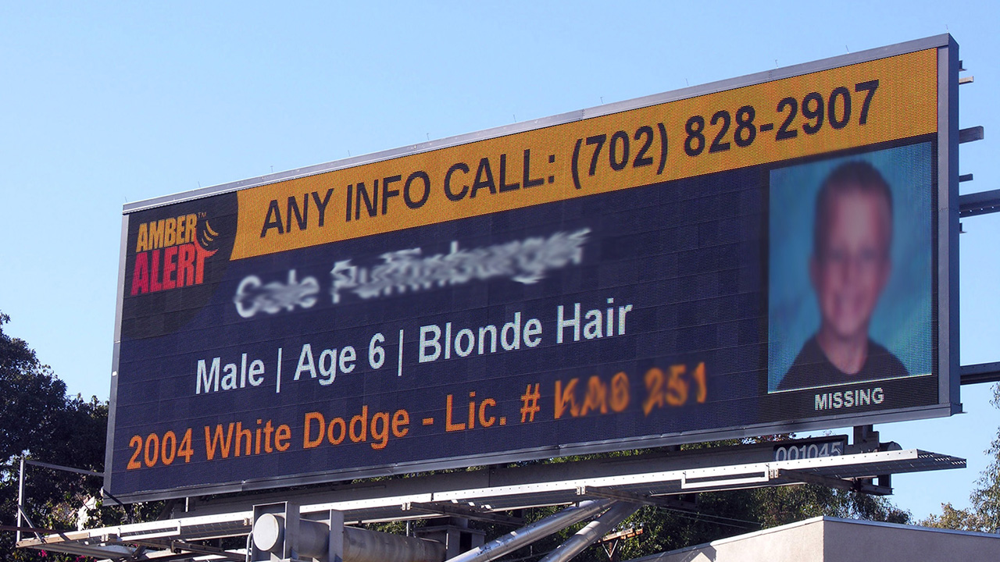
High cost and increasing frustration with current non-Drupal options
AxisTV License - $1200 one-time fee per display
Service Agreement - 11% per year
(Poorly designed interface; Unintuitive navigation)
Building Package License - $10000 enterprise fee per unit
Service Agreement - 17% per year
(Easier to use interface; Higher cost per unit)
Local Hosting License - $950 one-time fee
Media Player Fee - $725 per year per display
Service Agreement - 20% of total software cost per year
*Cloud Hosting Option - $40 monthly fee per player
(High cost per unit; High hardware costs)
Massive redesign project for all CLAS department websites
45 department websites and 20 center websites
Creation of a consistent look and feel throughout the College
Common header for familiarity and ease-of-use across websites
Utilize the University colors (Black and Gold)
Capture attention faster and spark more interest
Drupal was free and was already gaining momentum on campus
Easier for us to use the same interface for both projects
Nearly 32,000 contributed modules available on drupal.org
We could create our own custom modules to go above and beyond
Online resources were helpful for finding solutions to problems
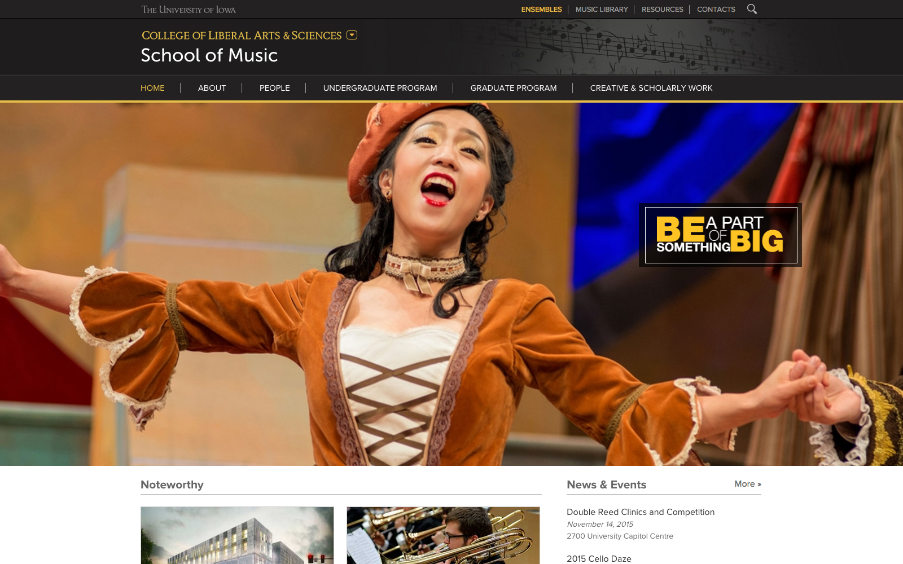
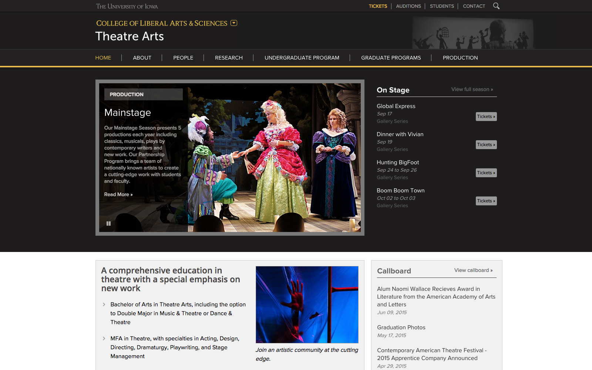
Theme based on the new CLAS design and identity
Used the CLAS theme as inspiration for the digital signage theme
Utilizes the University colors (Black and Gold)
University and College logos to enforce identity
Large, bold fonts for better clarity from distance
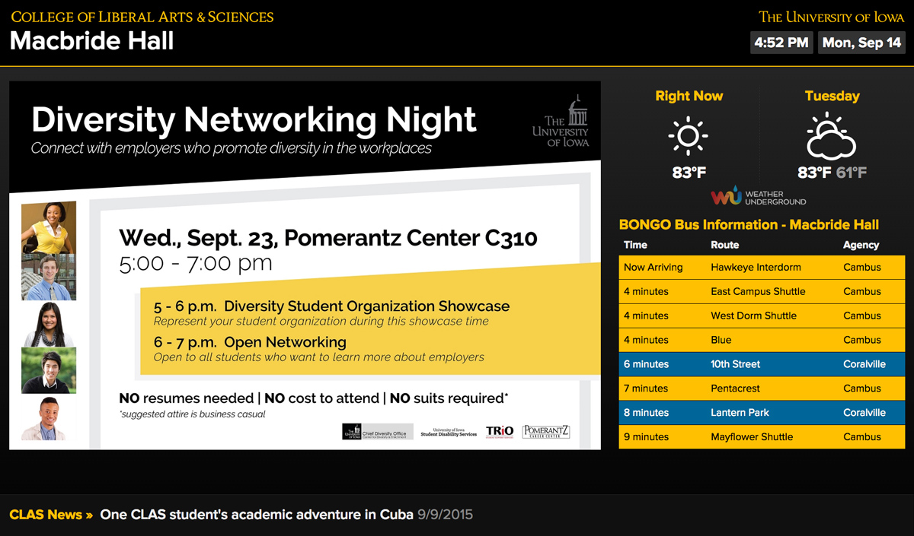
Responsive design for various display types
Fluid Grid CSS Framework
One-, Two- and Three-column flexible layouts
Tablets, 720p, 1080p, and 4k displays
Landscape and Portrait Orientations
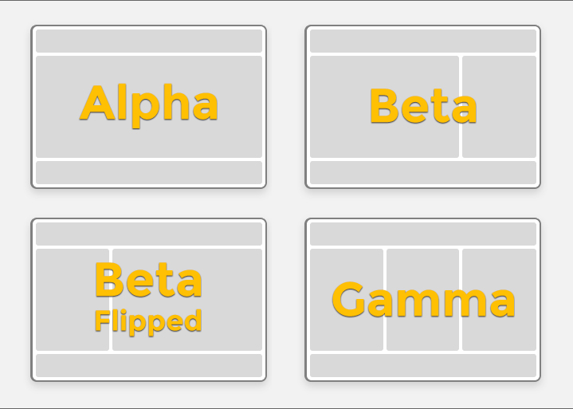
Core and modules
Core
CAS
Chaos Tools
Date
Feeds
Flexslider
Organic Groups
Panelizer
Panels
Views
Content Managers can create up to three independent slideshows
Slideshow content can be scheduled and shared across groups
Additional Scripts/Modules
Date/Time
Weather Forecast - wunderground.com
BONGO (Bus On The Go) - ebongo.org
Earthquake Data Map (USGS) - USGS.gov
Scrolling News Marquee
Rotating Events
Facebook*
Twitter*
Create a shell script (forecast.sh) to pull the forecast from Weather Underground® and create a local forecast.json file:
#!/bin/sh
mv -f <path>/forecast.json <path>/forecast.json.bak
curl -s http://api.wunderground.com/api/<WeatherUndergroundID>/forecast/geolookup/
conditions/q/IA/Iowa_City.json?pws=0 -o "<path>/forecast.json"
Create a cronjob to run the forecast.sh script on a schedule:
MAILTO="email@domain.edu"
*/3 * * * * root <path>/forecast.sh >/dev/null 2>&1
Tell the JavaScript to read from the local forecast.json file:
function displayWeather() {
$.ajax({
cache : false,
type : 'GET',
url : '<path>/forecast.json',
dataType : 'json',
error : function() {
// Error handling
},
success : function(parsed_json) {
// Do something here
}
});
}
Feeds module used to pull news from department websites
Pulls events from the University Localist Event system
Automatic removal of outdated news and events
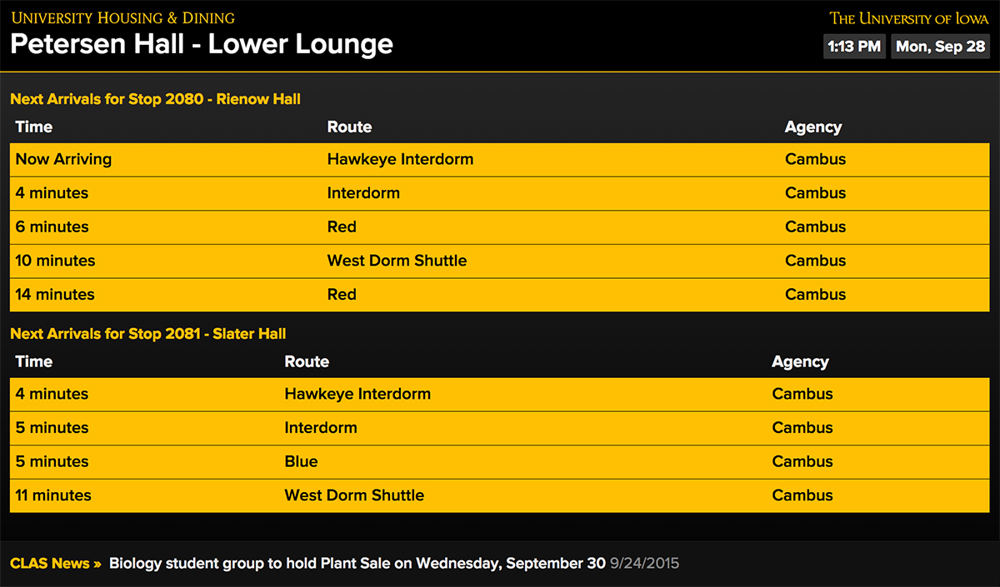
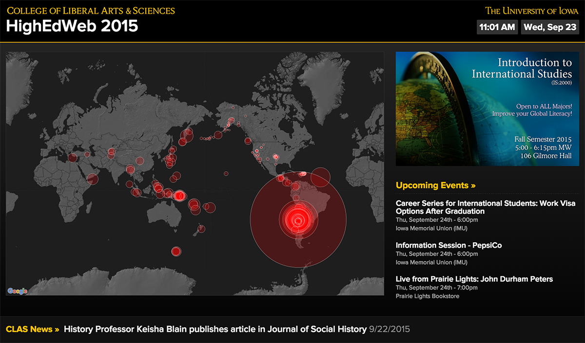
Hawk Alert (Emergency Notification System)
Create a shell script (hawkalert.sh) to pull the Hawk Alert CAP Feed and create a local hawkalert.xml file:
#!/bin/sh
mv -f <path>/hawkalert.xml <path>/hawkalert.xml.bak
curl -s http://emergency.uiowa.edu/hawk-alert-CAP -o "<path>/hawkalert.xml"
Create a cronjob to run the hawkalert.sh script on a schedule:
MAILTO="email@domain.edu"
*/5 * * * * root <path>/hawkalert.sh >/dev/null 2>&1
Tell the JavaScript to read from the local hawkalert.xml file:
function displayHawkAlert() {
$.ajax({
cache : false,
type : 'GET',
url : '<path>/hawkalert.xml',
dataType : 'xml',
error : function() {
// Error handling
},
success : function(xml) {
if( message has children ) {
// Do something here
}
else {
// Resume normal content
}
}
});
}
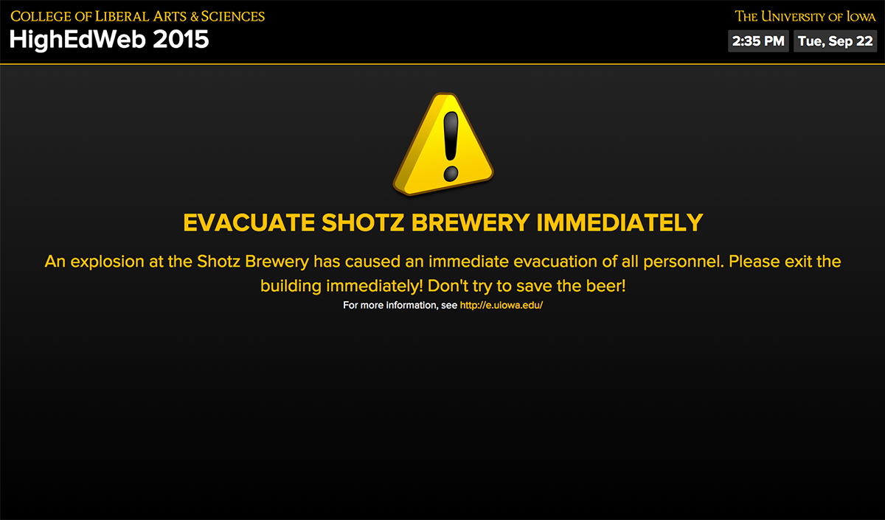
Easy-to-use User Interface
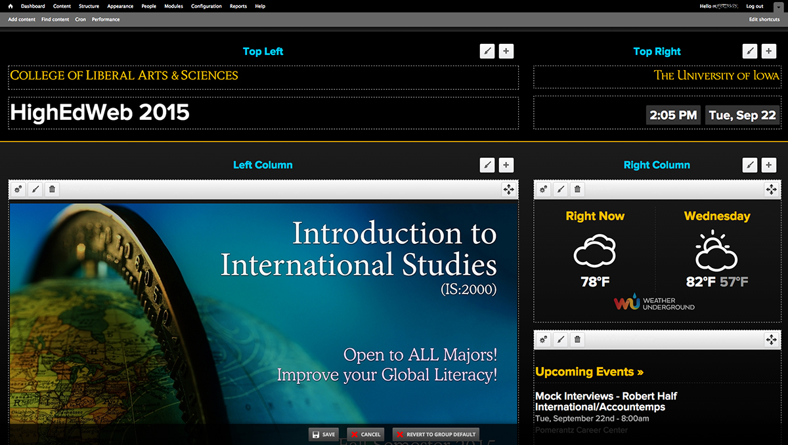
"Media Player" Setups
Dell Optiplex 3020 Micro PC or similar device
CLAS IT Standard Plus Image (SCCM) 32-bit Windows 7 Enterprise
System updates received monthly via SCCM
IE9 with Kiosk Mode feature enabled
Group Page launched automatically on boot
LanSchool Classroom Management software - lanschool.com
Basic build cost = ~$400
Raspbian OS Image
Chromium with Kiosk and Incognito modes enabled
Group Page launched automatically on boot
Preconfigured setup available on additional SD cards
Powered via Micro-USB cable connected to display
Raspberry Pi 2 Complete Starter Kit (Amazon) = $70-80
New SCCM Image 32-bit Windows 8.1 Enterprise
Google Chrome with Kiosk and Incognito modes enabled
Connects directly to HDMI port on back of display
Wireless, Bluetooth, USB 2.0, and MicroSD connections
Powered via AC power adapter (included)
TigerVNC - tigervnc.org / Apple Remote Desktop - ARD
* Intel Compute Stick (Amazon) = $130
Allows us to remotely monitor each display and restart if necessary - http://lanschool.com
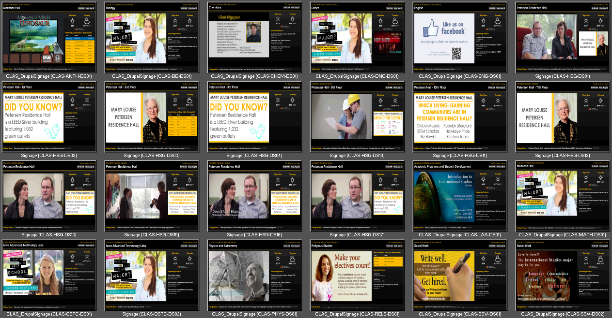
Allows us to remotely monitor each display / force restart with no additional cost to clients
TigerVNC - Apple Remote Desktop
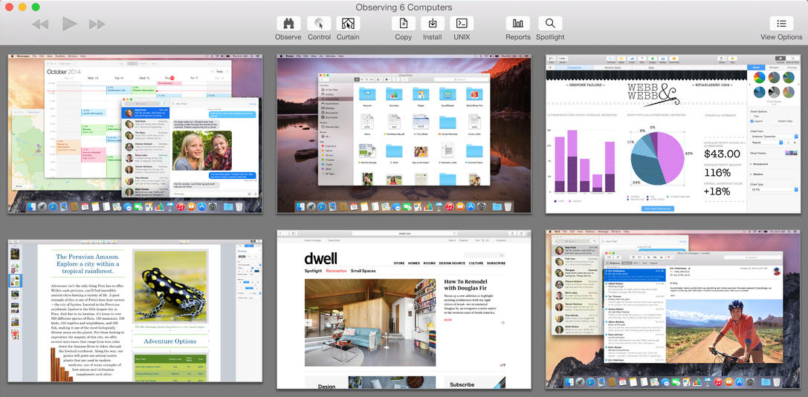
Academic Programs and Student Development
Anthropology,
Biology,
Chemistry,
Computer Science,
Dance,
English,
Geographical and Sustainability Sciences,
Health and Human Physiology,
Iowa Advanced Technology Labs,
Journalism and Mass Communication,
Mathematics,
Physics and Astronomy,
Religious Studies,
Social Work,
Theatre Arts,
World Languages, Literatures and Cultures
Information Technology Services
University Admissions
University Athletics
Housing and Dining
Graduate College
College of Engineering
College of Medicine
Main Library and Learning Commons
Penn State University
Stanford University
Georgia Tech University
Creating a University wide Digital Signage solution with Central IT
New slideshow functionality to improve sharing of content
Mapping / Wayfinding
White Pages / Directory Listing
When we finish the new solution, we plan to share it with others
Can collaboration with others to make the project even better?
Ben Speare (CLAS Web Services)
Lance Bolton, Rick Bennett (CLAS IT)
Isaac Podolefsky, Mike Hendrickson (CLAS IT)
Bob Irwin, Kelvin Lehrman (CLAS IT)
Andy Jenkins (Graduate College)
Josh Kaine (University Creative Services)
Please remember to give us any and all feedback!